Explore six interconnected lakes and the trails, gardens, and wildlife habitats that surround them. With over 8 miles of accessible walking paths, wayfinding signage, and dozens of amenities, Willow Waterhole offers an outdoor experience unlike any other in Houston.
Westbury Lake is the largest and most visited part of the Greenway, named for the nearby neighborhood it serves. It functions as the park's central gathering space, with loop trails, shaded seating, butterfly sculptures, a gazebo, and a fishing pier along the shoreline. Whether you're walking, resting, or taking in the view, Westbury Lake brings together many of the Greenway's most loved features in one place.
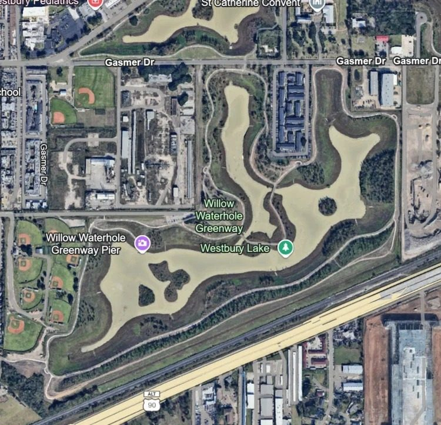
Address: 5300 Dryad Drive (main entrance and main parking)
Cross streets: Dryad Drive (west), Gasmer Dr (north), Hwy 90 (south); additional street parking on Ricecrest
Connects to: Central parking area, Bob Schwartz Gazebo, and lakefront trails
Get DirectionsTap a feature to learn more about the places, trails, art, and habitats that make this lake unique.
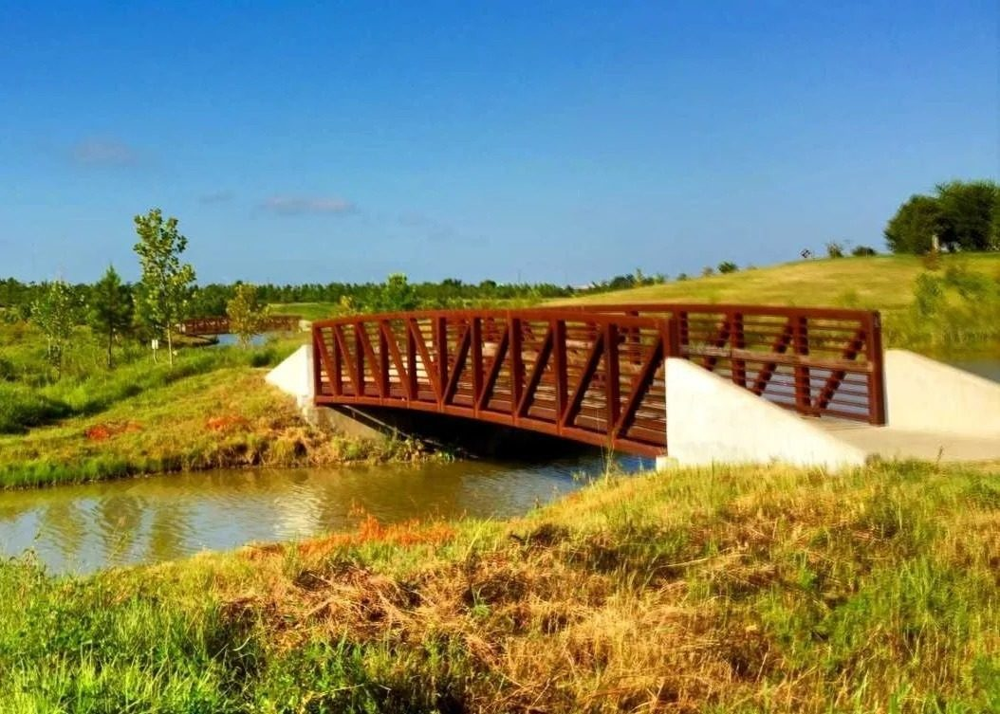
Willow Waterhole BridgesThese iconic bridges span the lake's inlets and connect the east and west sides of the loop trail. With their distinctive look and mirrored reflections, they've become iconic photo spots and are some of the most recognizable features of the Park.
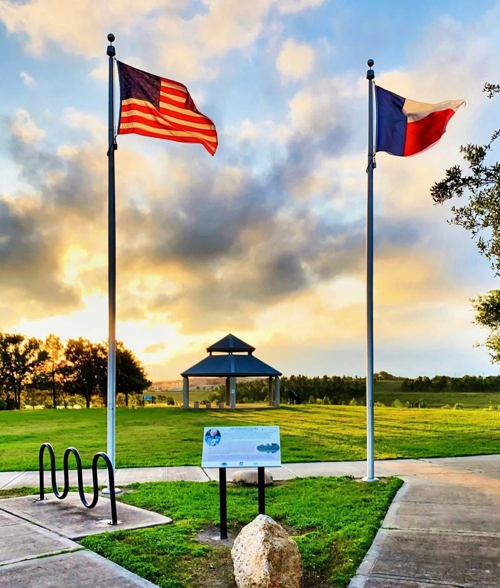
Bob Schwartz Gazebo & Flag PlazaA defining feature of the park, this covered gathering space sits along the lake's western edge. It's used for everyday shade, performances, and ceremonies, and remains one of the most photographed spots at Willow Waterhole.
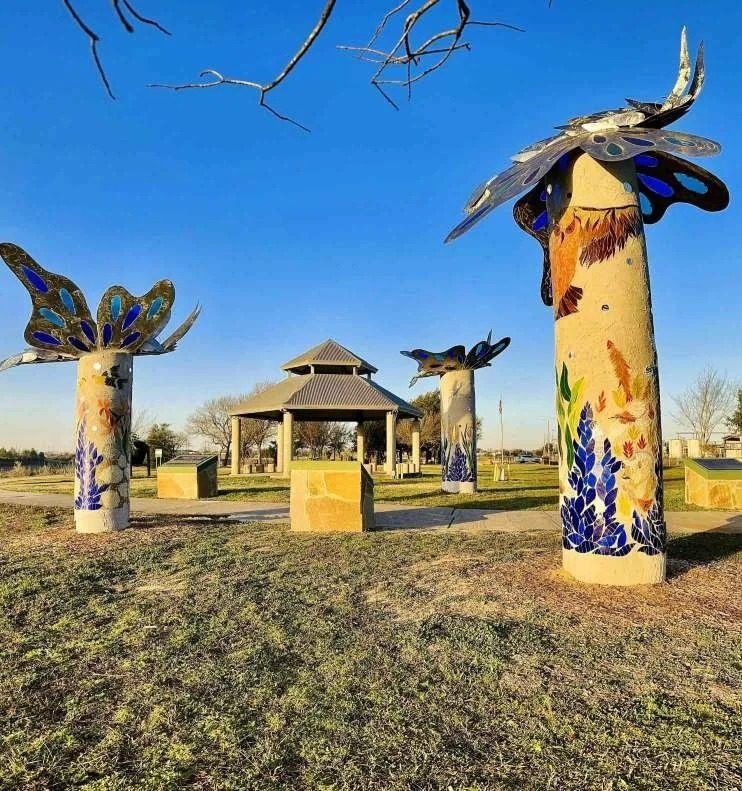
"Flowers for a Lady": Butterfly SculpturesThree butterfly sculptures by Rosalinda R. Toro honor Kathleen Tinsley Ownby for her leadership in expanding park access and education in Houston. The artwork celebrates growth, beauty, and transformation.
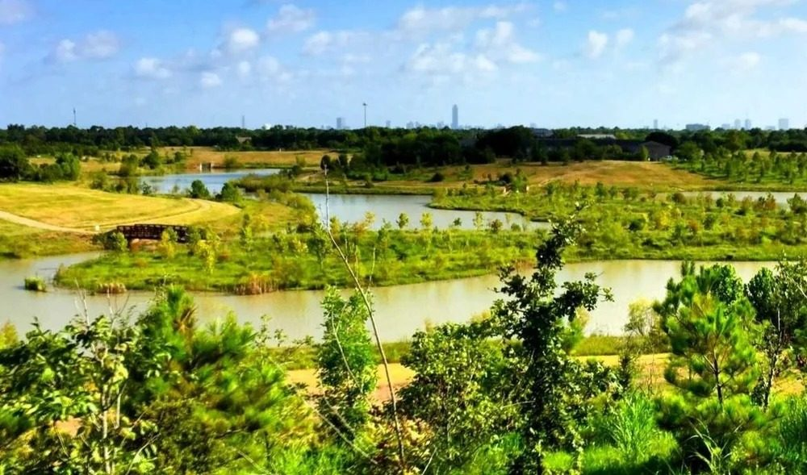
Trail OverlookAlong the south side of the lake, this two-tiered trail offers elevated views across the water and far into the surrounding landscape. It's one of Houston's few natural overlooks and a peaceful place to take it all in.
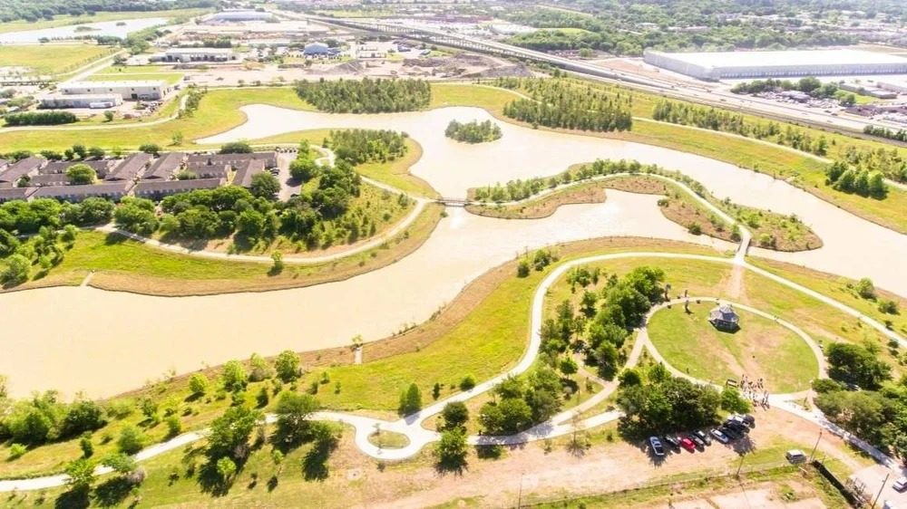
Naturescapes: Wood SculpturesLocated near the gazebo, these carvings by James D. Phillips depict birds, fish, turtles, wildflowers, people, and even Buster the Dog. Each piece rests on a permeable base (installed by an Eagle Scout) and brings wildlife and community stories to life.
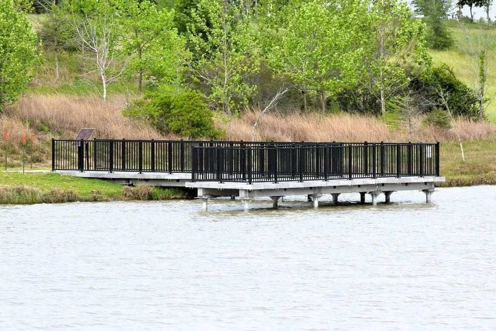
Fishing Pier: ADA CompliantExtending slightly into the lake, this pier gives visitors a steady place to cast a line, watch the water, or take a quiet break. It's a relaxed spot for casual fishing and enjoying the view.
Triangle Lake, named for the shape formed by its surrounding roads, is a welcoming entry point into the park and a favorite for birders and plant lovers. Trails lead past native prairie gardens, an ancient live oak, and one of the park's most photographed spots, the Willow Waterhole sign. Nearby access to the Arboretum Trail and Birding Center makes Triangle a great place to start exploring both wildlife and the natural rhythms of the Greenway.
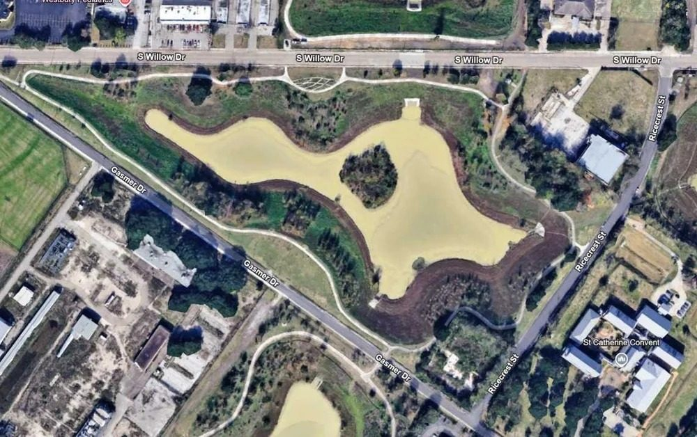
Address: Street parking on Ricecrest Street, between South Willow and Gasmer
Cross streets: Gasmer Drive (north), South Willow Drive (west), Ricecrest Street (east)
Connects to: Paved trail directly to Triangle Lake's loop trail and amenities
Get DirectionsTap a feature to learn more about the places, trails, art, and habitats that make this lake unique.
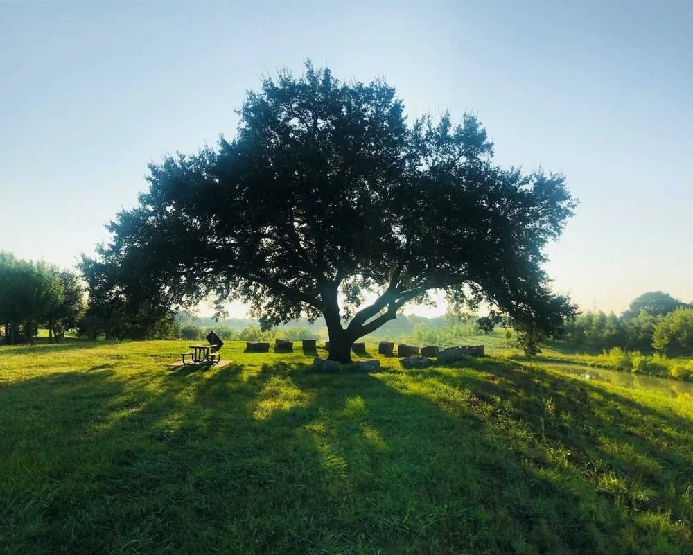
Outdoor ClassroomThis space includes circular stone seating for group instruction, nature talks, and student-led programs. It's a popular location for school field trips, scout meetings, and environmental education.
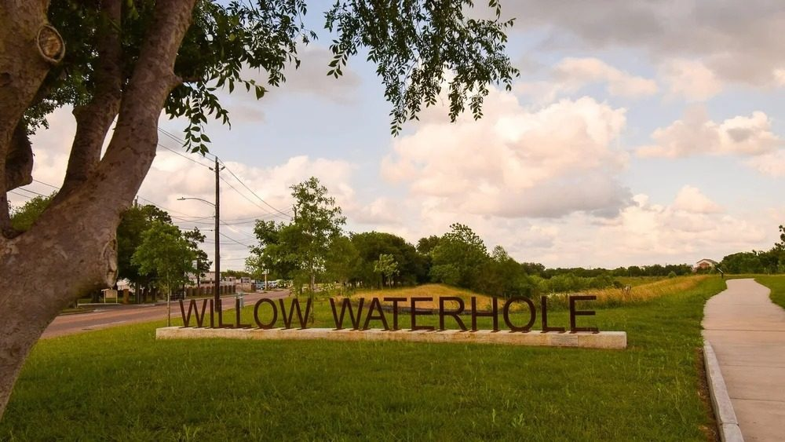
Willow Waterhole SignThis large Willow Waterhole sign near Triangle Lake has become a recognizable landmark and photo spot for park visitors. It anchors the lake's northwest entrance and signals arrival into the park from South Willow Drive.
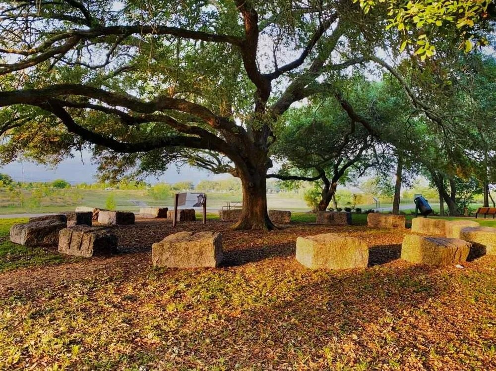
Jack Rafferty MemorialThis memorial honors Jack Rafferty, the Harris County Flood Control engineer whose 1940s master plan laid the groundwork for building detention basins like Willow Waterhole. It recognizes his lasting impact on flood control and the Westbury community.
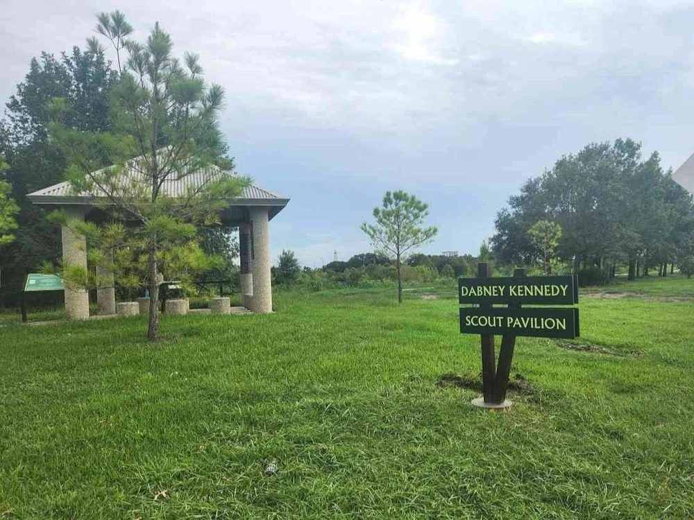
Dabney Kennedy Scout PavilionThis pavilion honors over 80 Eagle and Gold Award Scouts who completed projects at the Greenway. Named for Dabney Kennedy's leadership and scouting career, it marks a meaningful point along the Triangle Lake trail.
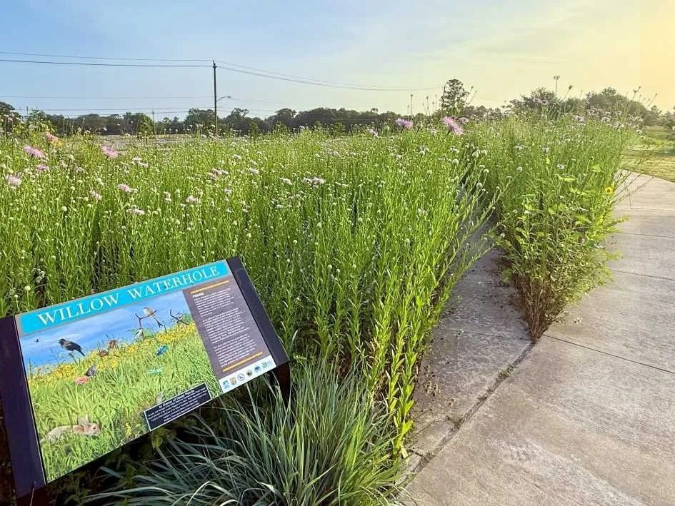
Native Plant GardenLocated near the pavilion, this vibrant prairie garden showcases seasonal wildflowers and grasses. Designed to reflect Houston's native ecosystems, it supports pollinators and adds color and texture to the lakeside trail.
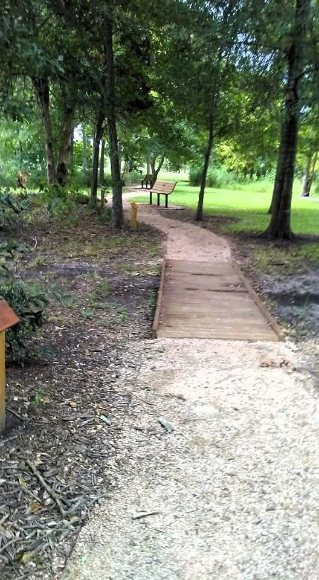
Arboretum TrailA path through native Texas plants, this trail features interpretive signs and showcases local biodiversity. Built through Scout-led projects, it adds an educational layer to the Triangle Lake experience.
Scout Lake may be the smallest of the six, but it plays a meaningful role in the park's design. Its name honors the many scout-led projects that have helped shape the Greenway, from trail work to conservation. A short loop trail brings visitors close to the lake's concrete weir, where water enters the basin during storms. With its quiet setting and thoughtful purpose, Scout Lake offers a space to reflect, observe, and connect with nature.
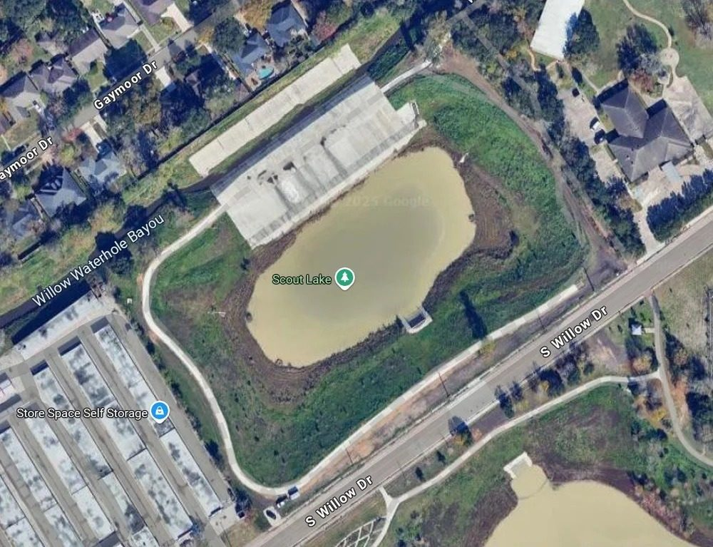
Address: Street parking on Ricecrest Street, between South Willow and Gasmer
Cross streets: South Willow Drive, between The Gathering Place and the Self-Storage facility
Connects to: Paved trail to Triangle Lake's loop trail, via the Dabney Kennedy Scout Pavilion to Scout Lake
Get DirectionsTap a feature to learn more about the places, trails, art, and habitats that make this lake unique.
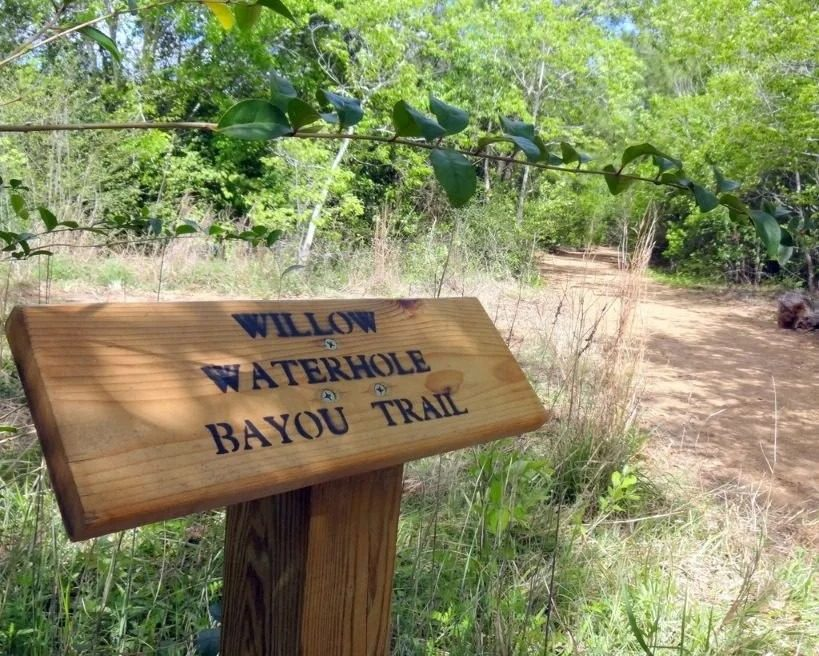
Bayou TrailA trail between Scout Lake and The Gathering Place, running from Willow Waterhole Bayou to South Willow Drive. Built by Scouts, it offers a shaded path with a connection to Triangle Lake by the Dabney Kennedy Pavilion.
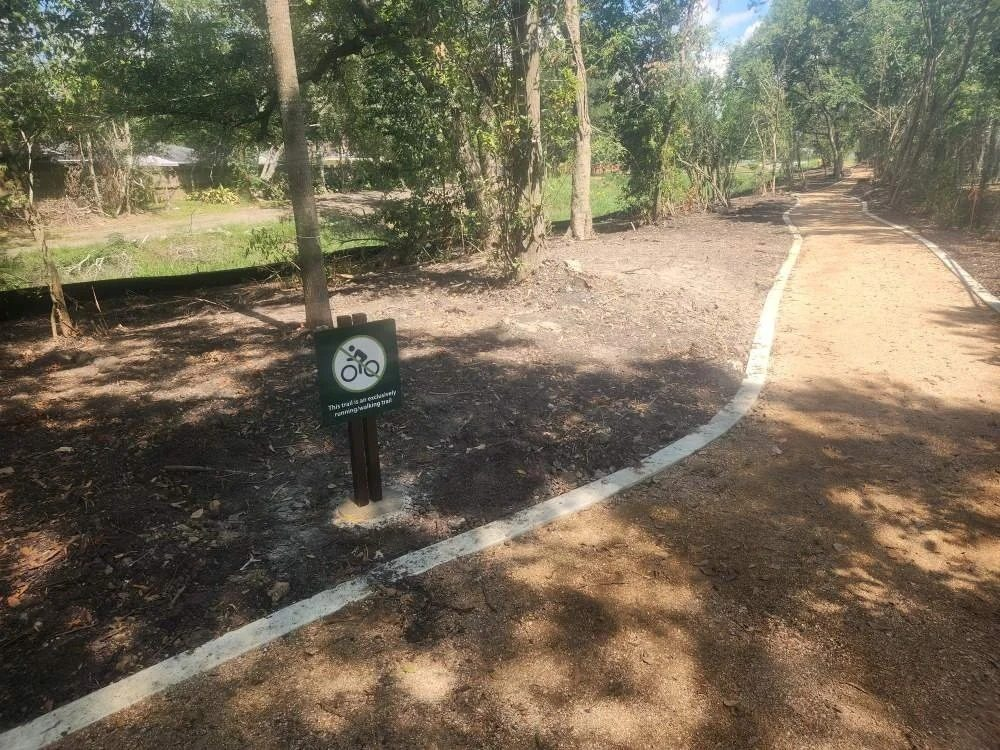
Menninger TrailA shaded gravel route behind The Gathering Place that follows Willow Waterhole Bayou and connects Scout Lake to Heron Lake. The quiet setting and trees make it a favorite for birdwatching and nature walks.
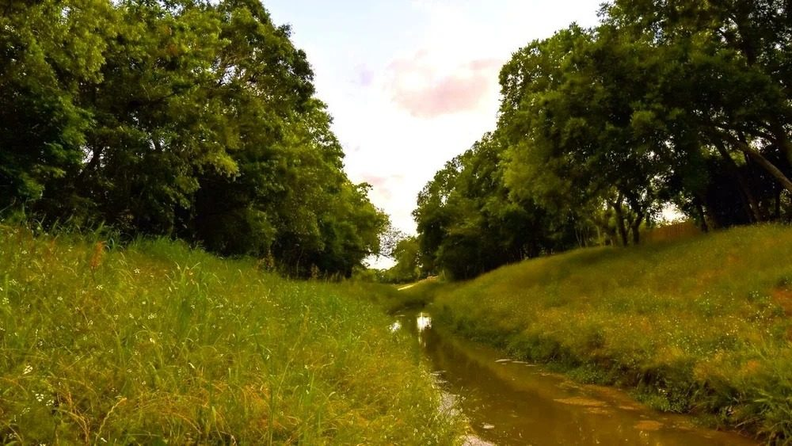
Willow Waterhole BayouA four-mile stream that runs through Brays Oaks, Westbury, and Willow Meadows. The Bayou supports abundant wildlife and concrete weirs alongside Scout and Heron Lakes divert stormwater into the basins during heavy rains.
Heron Lake is named for the graceful birds that nest nearby and forage along its shoreline, making it one of the park's top spots for birdwatching. The surrounding Audubon Trail honors Houston Audubon, a key partner in supporting bird habitat and conservation at the park. The trail links to nearby neighborhoods, and a large concrete structure helps manage stormwater flow into the basin, creating a landscape where birds and people thrive.
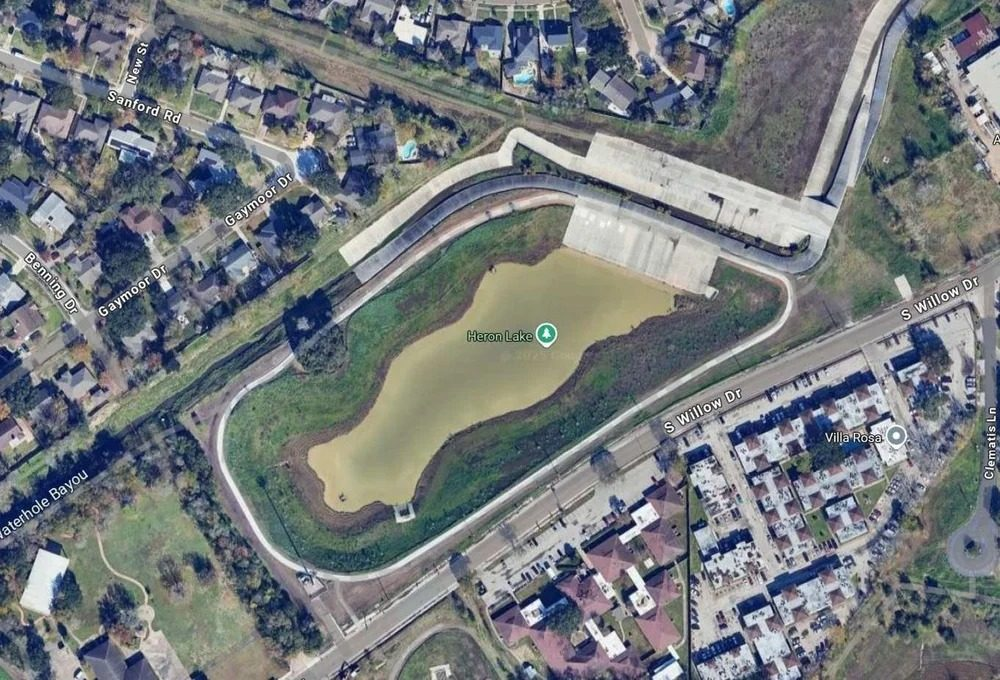
Address: Ricecrest Street, or the Clematis Lane North Lot
Cross streets: South Willow Drive, east of The Gathering Place, west of Clematis Lane
Connects to: Southwest trail entrance (via Ricecrest); weir bridge and Donald Perkins Neighborhood Trail (via Clematis Lane North Lot)
Get DirectionsTap a feature to learn more about the places, trails, art, and habitats that make this lake unique.
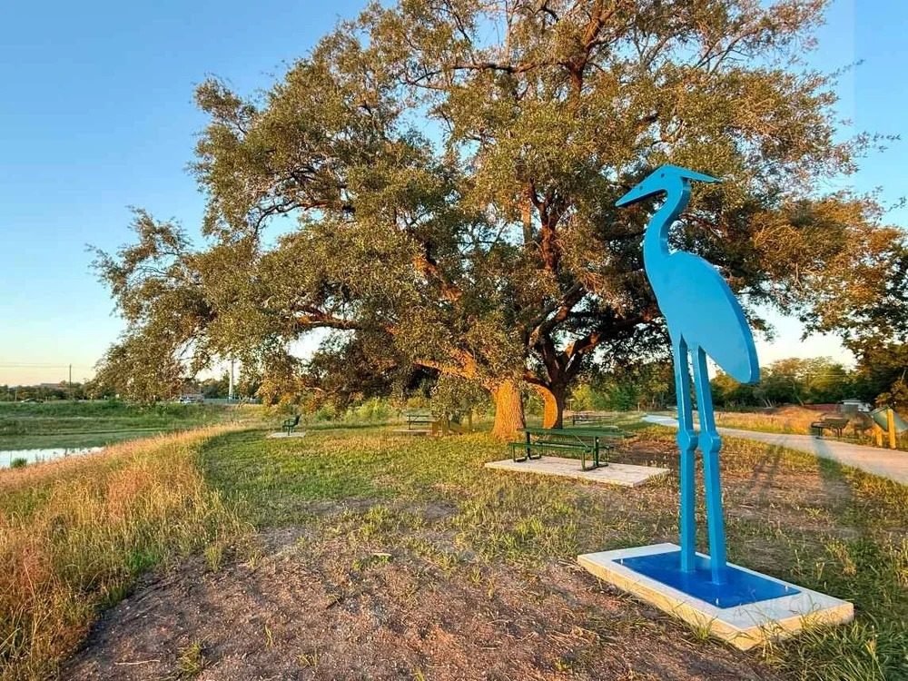
Blue Heron SculptureCreated by Texas artist Jeffie Brewer, this 12-foot metal heron stands along the Audubon Trail as a striking tribute to the birds that frequent Heron Lake. It's both a visual landmark and a favorite photo stop.
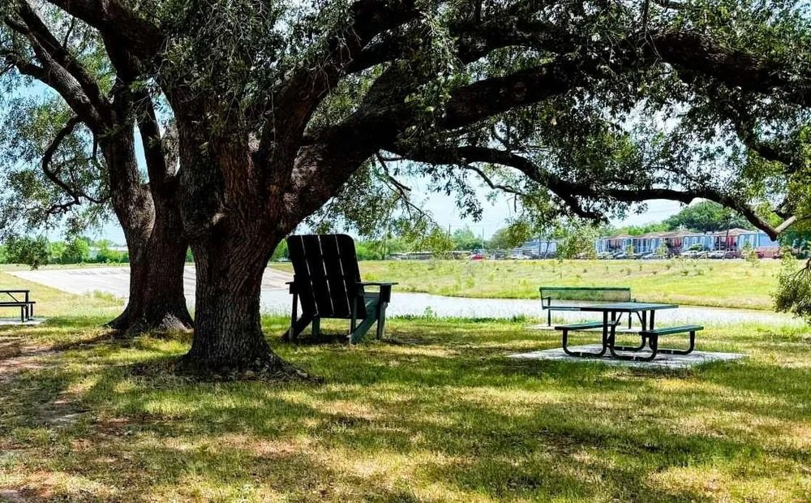
Oversized Wooden Chair under Oak TreesSet beneath a canopy of mature oaks, this oversized wooden chair offers a quiet place to rest, reflect, or snap a photo. Its playful scale and shady setting make it a favorite stop along the trail.
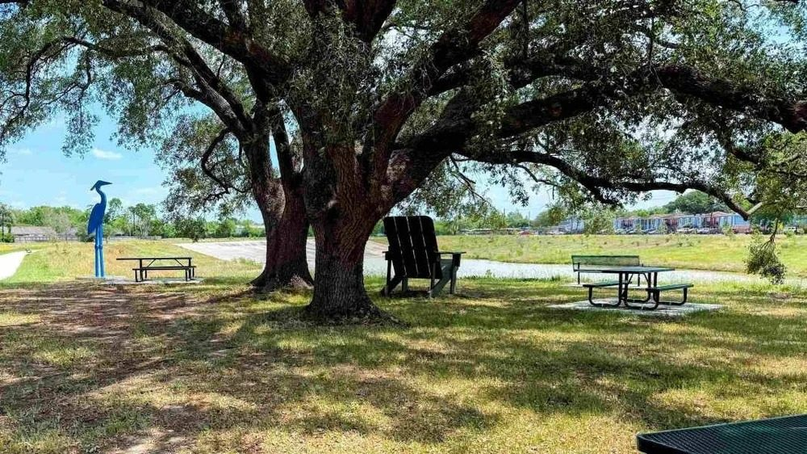
Stormwater WeirThis large concrete weir channels stormwater from Willow Waterhole Bayou into the lake. Its bridge and channel design slows the flow and supports habitat for birds and aquatic life.
Willow Lake is a broad loop with open water and one of the most scenic walking paths in the Greenway. Named for the nearby bayou and road, the lake offers a mix of shoreline views, gentle elevation changes, and a distinctive wetland section that attracts water birds year-round. It's a favorite for walkers, birdwatchers, and anyone looking to enjoy a longer, peaceful route through the park.
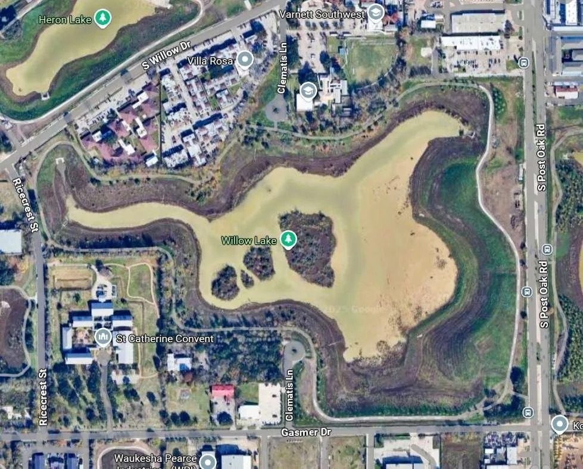
Address: Ricecrest Street, or the Clematis Lane North / South Lots
Cross streets: S. Willow Drive (north), Post Oak Rd (east), Gasmer Dr (south), Ricecrest Street (west)
Connects to: Direct access to the Kinder Foundation Trail
Get DirectionsTap a feature to learn more about the places, trails, art, and habitats that make this lake unique.
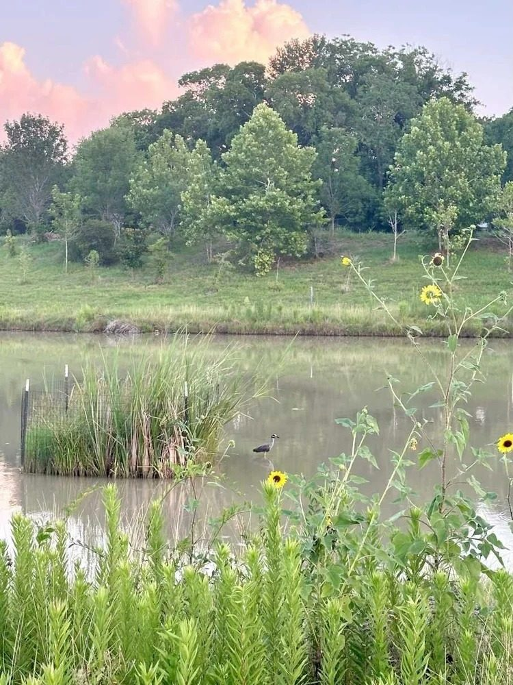
Wetland ShelfThis wetland along the east side of the lake supports native plants and attracts wading birds. It's a visible example of habitat restoration and a favorite spot for birdwatchers and nature lovers.
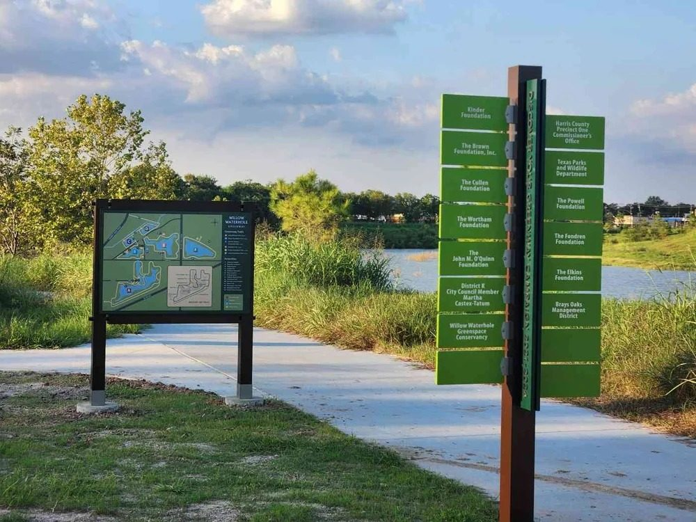
Willow Waterhole SignThis permanent sign near the trail recognizes donors whose contributions have shaped the entire Willow Waterhole Greenway. It reflects the community's commitment to conservation, access, and public space.
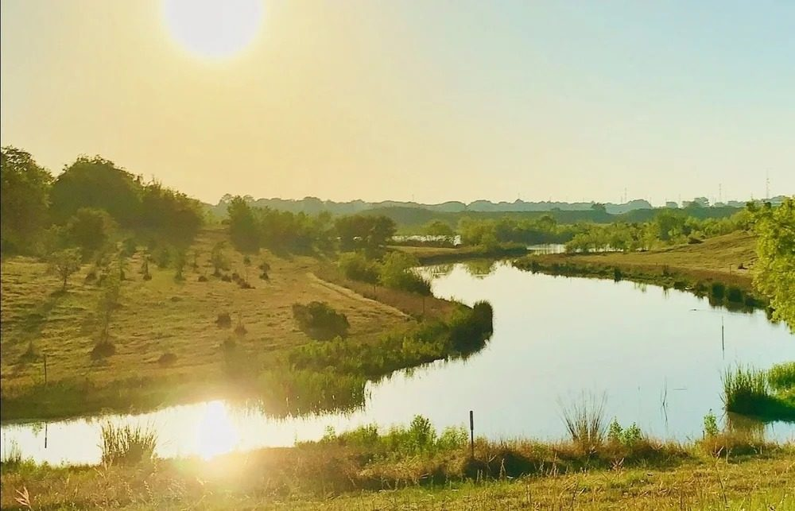
Grassy Mound OverlookThese grassy mounds on the east side near Post Oak offer elevated views of the lake and surrounding trails. They're a quiet spot for taking in the landscape or watching birds move across the water.
Prairie Lake is named for the native grasslands that stretch across this side of the Greenway. It borders the Prairie Management Area, a protected habitat for hundreds of plant species including the endangered Texas prairie dawn flower. The lake offers wide open views, frequent bird activity, and a strong sense of connection to Houston's natural heritage.
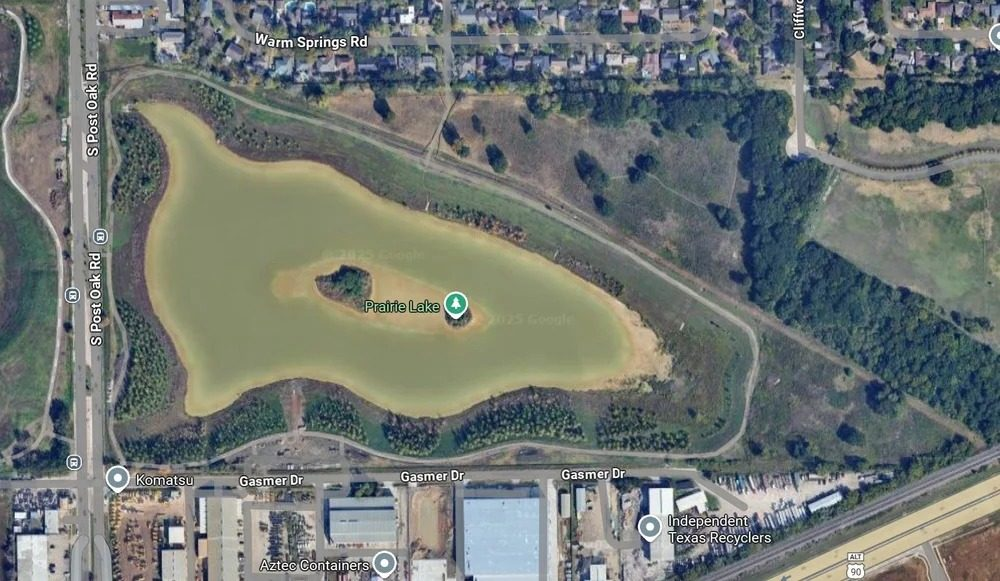
Address: Gasmer Dr parking lot (south side of the lake)
Cross streets: S. Post Oak Rd (west), Post Oak Manor neighborhood (north), Gasmer Drive (south)
Connects to: Cullen Foundation Trail and the Native Prairie Preserve boardwalk
Get DirectionsTap a feature to learn more about the places, trails, art, and habitats that make this lake unique.
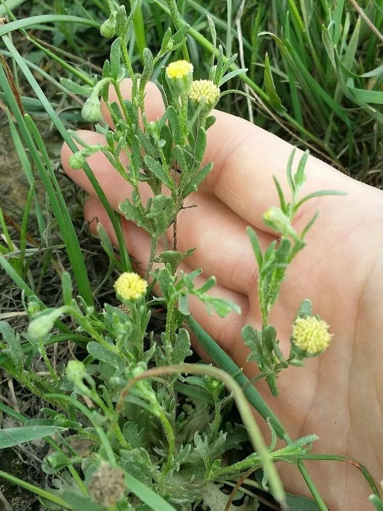
Texas Prairie Dawn FlowerThis rare wildflower grows only in a few locations across Texas, including the edge of Prairie Lake. Its protected status highlights the importance of preserving native Gulf Coast prairie habitat.
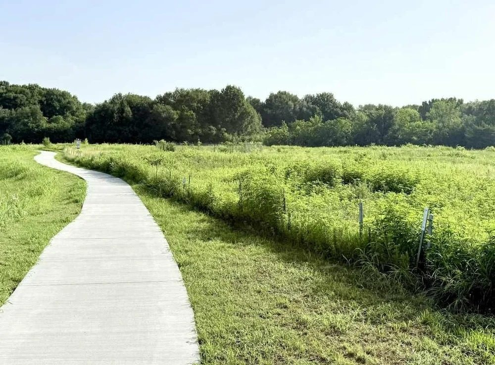
Native Prairie PreserveAlong the lake's northeast edge, this 15-acre protected area supports over 300 species of coastal prairie plants. Though access is limited, it serves as a vital habitat and conservation zone within the park.
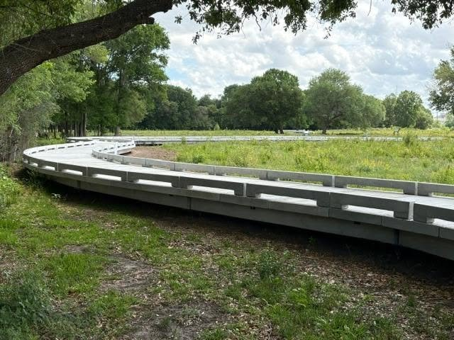
Boardwalk PathA raised boardwalk links the lake to the native prairie, crossing a natural drainage area. It protects the landscape while offering visitors better access and views into the 15-acre preserve.
Every lake connects to the next. Plan your visit and follow the trails wherever they lead.
Plan Your Visit{kind=link}